Tabanan
Jatiluwih rice terraces. Jorge Franganillo, CC BY 2.0, via Wikimedia Commons.
Sources
Place pictures are of the coast, the street, or the terrace named on the page. A project that is not built is shown as the place it sits on, not as a finished work. The statute is the public text of Law 5 of 1960. The stud is the wall specification. The block is autoclaved aerated concrete, the market default.
Jatiluwih rice terraces. Jorge Franganillo, CC BY 2.0, via Wikimedia Commons.

Volcanic shore. Mx. Granger, CC0, via Wikimedia Commons.
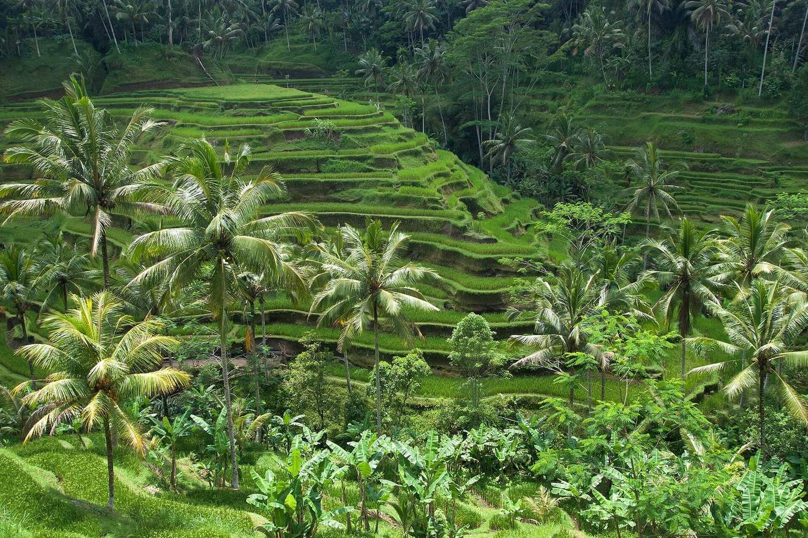
Tegallalang rice terraces. Vyacheslav Argenberg, CC BY 4.0, via Wikimedia Commons.
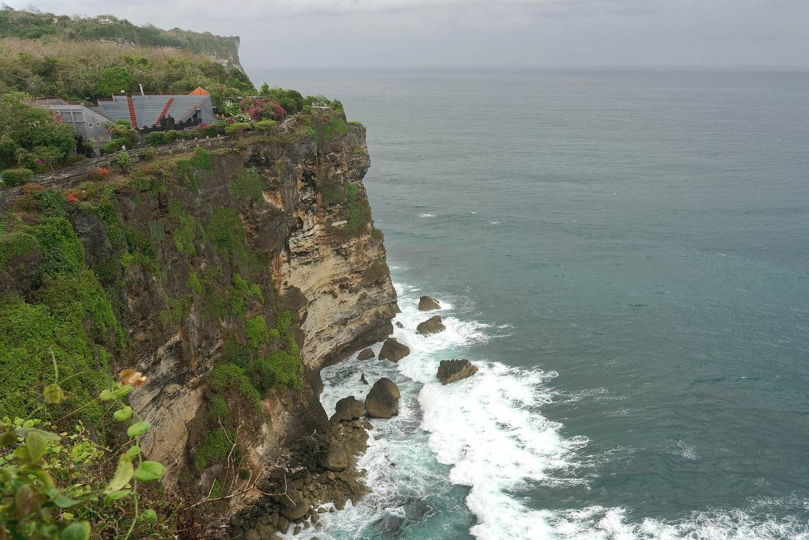
Cliff. Jakub Hałun, CC BY-SA 4.0, via Wikimedia Commons.

Buleleng coast from the air. Mx. Granger, CC0, via Wikimedia Commons.
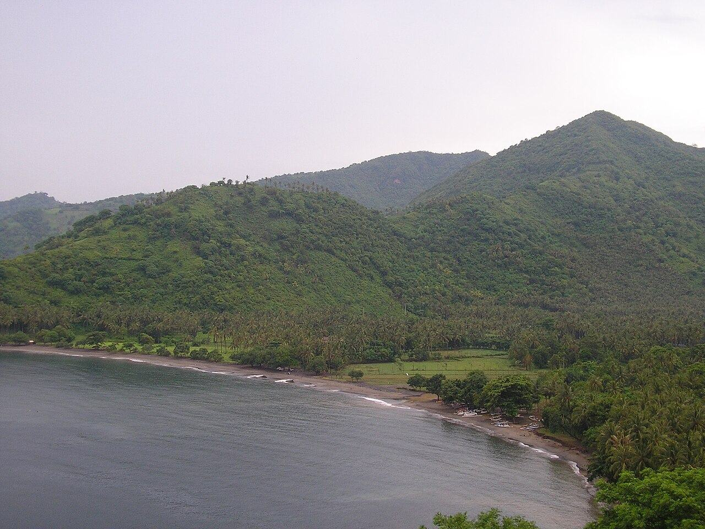
Bay near Senggigi. a_rabin, CC BY 2.0, via Wikimedia Commons.
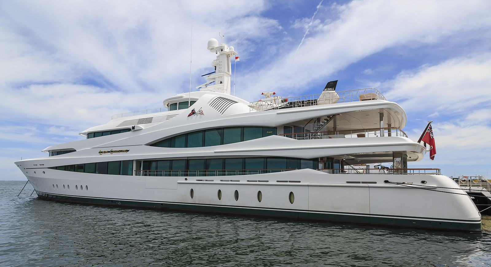
Lady Christine at Benoa harbour. CEphoto, Uwe Aranas, CC BY-SA 3.0, via Wikimedia Commons.

Shore named in the financial-centre study. The centre itself has not been designated. Aspere, CC0, via Wikimedia Commons.
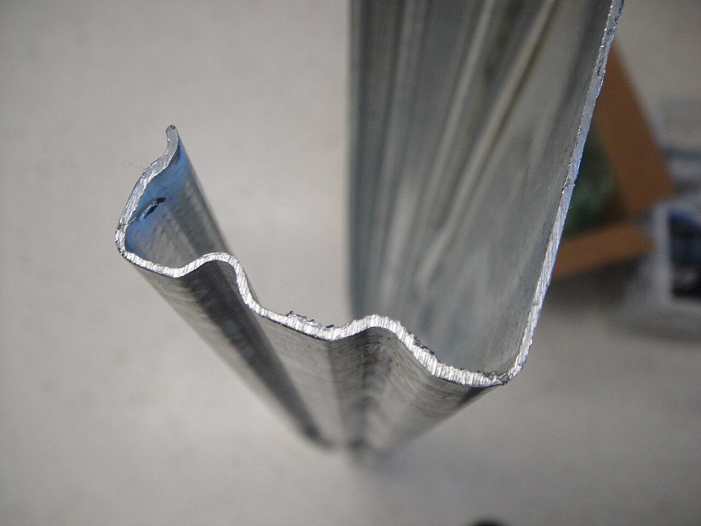
Cold-formed steel stud, the wall in the specification. Rfehr613, public domain, via Wikimedia Commons.

Title page of Law 5 of 1960, cropped from a public-domain scan. Via Wikimedia Commons.

The shore where the subway groundbreaking was held. There is no station in the picture. Jakub Hałun, CC BY-SA 4.0, via Wikimedia Commons.
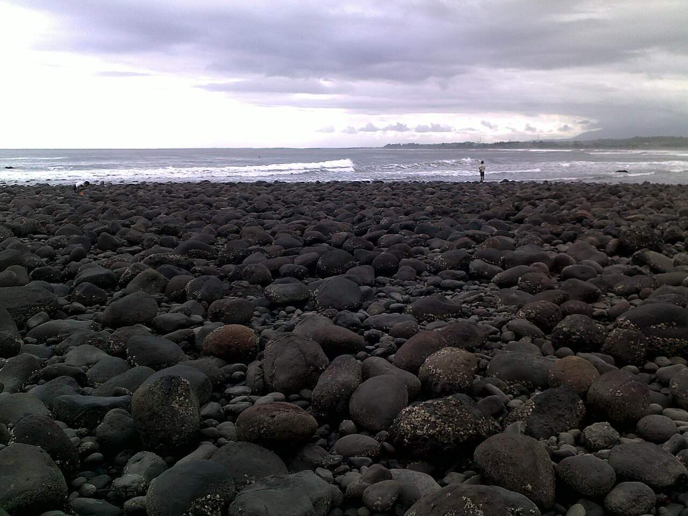
Medewi beach, Jembrana, the western end of the toll that is still a tender. ahmad yudi, CC BY-SA 3.0, via Wikimedia Commons.
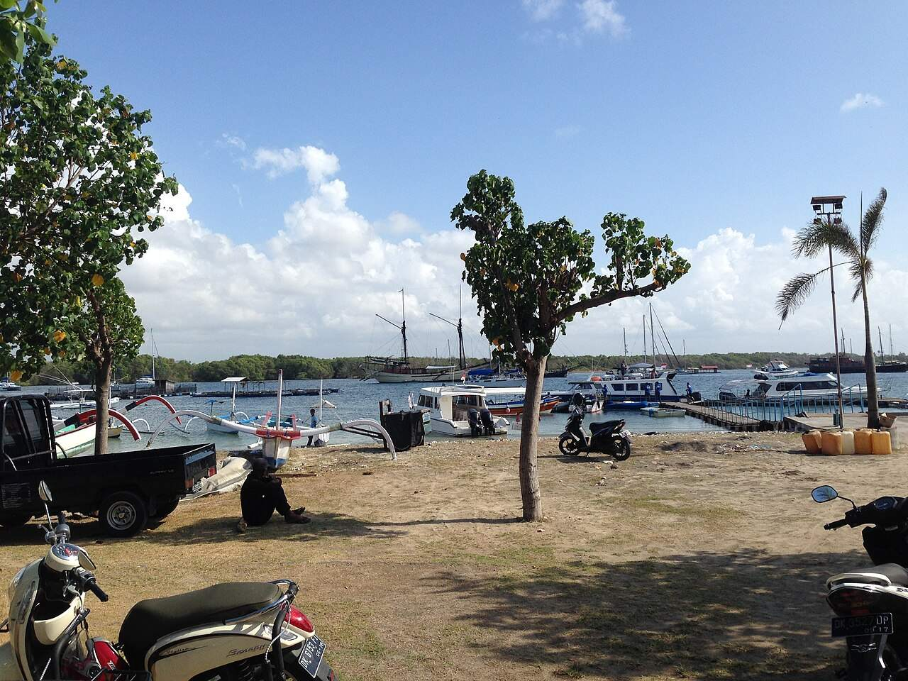
The working shore on the island named in KEK Kura Kura Bali. Not the zone’s buildings. 肖红军, CC BY-SA 3.0, via Wikimedia Commons.
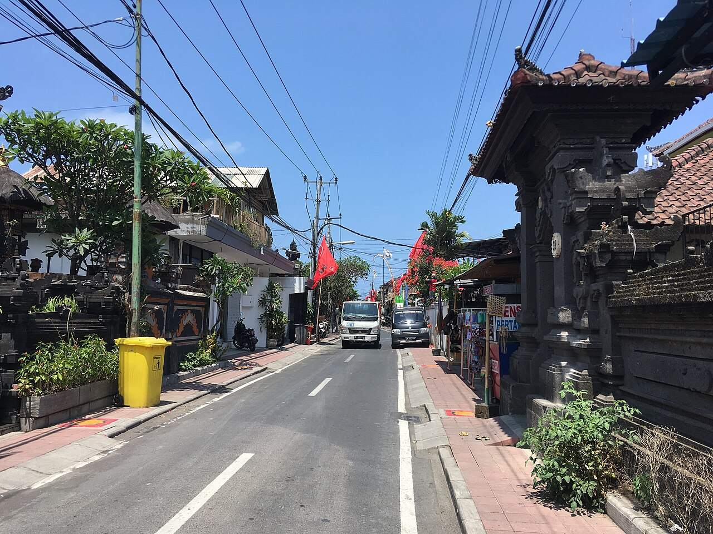
A street of gates and houses. Christophe95, CC BY-SA 4.0, via Wikimedia Commons.
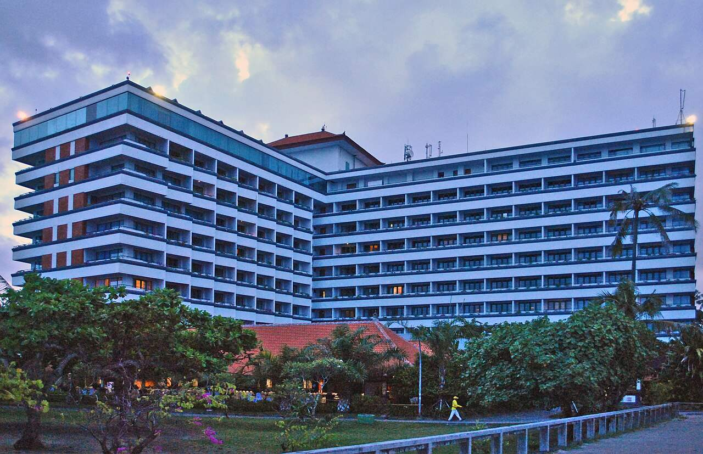
Inna Grand Bali Beach. The hotel occupancy figure, not a villa listing. musnahterinjak, CC BY-SA 3.0, via Wikimedia Commons.
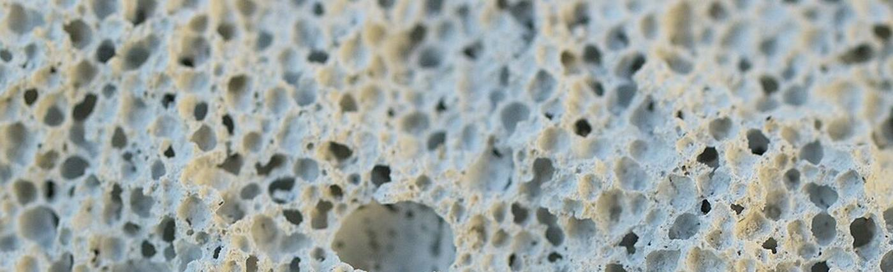
Autoclaved aerated concrete, cropped to the block. Marco Bernardini, CC BY-SA 3.0, via Wikimedia Commons.
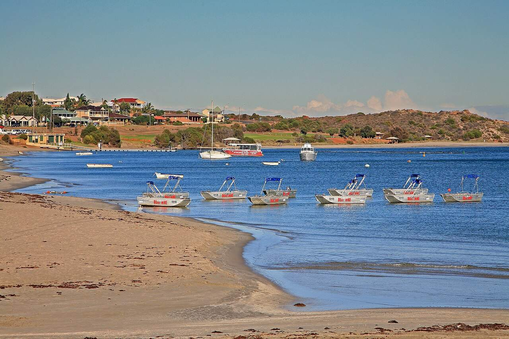
The Western Australian coast of the 2020 cyclone repair work. W. Bulach, CC BY-SA 4.0, via Wikimedia Commons.
{kind=link}
{kind=link}
{kind=link}
{kind=link}
{kind=link}
{kind=link}
{kind=link}
{kind=link}
{kind=link}
{kind=link}
{kind=link}
{kind=link}
{kind=link}
{kind=link}
{kind=link}
{kind=link}